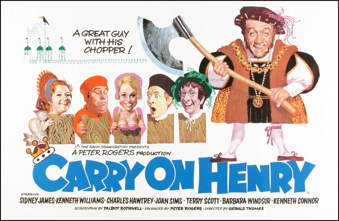

Peter Rogers
Peter Munt (uncredited)
The film opens with a passage, which states: This film is based on a recently discovered manuscript by one William Cobbler, which reveals that Henry VIII did in fact have two more wives. Although it was first thought that Cromwell originated the story, it is now known to be definitely all Cobbler's ... from beginning to end.
Henry VIII (Sid James) has his wife (Patsy Rowlands) beheaded and quickly marries Marie of Normandy (Joan Sims). This union was organised at the behest of bumbling Cardinal Wolsey (Terry Scott) as Marie is cousin of King Francis I of France. Henry's wedding night ardour dies when he finds she reeks of garlic, but she refuses to stop eating it. Marie gets frustrated so soon receives amorous advances from Sir Roger de Lodgerley (Charles Hawtrey who, while still in his camp persona, is playing against type as a ladies' man).
Henry is keen to be rid of Marie, as he has met the lovely Bettina (Barbara Windsor, in her favourite Carry On role). Bettina is the daughter of the Earl of Bristol (Peter Butterworth, in a one scene cameo), a punning reference to Bristols. Thomas Cromwell (Kenneth Williams) assists in ousting Marie by organising Lord Hampton of Wick (Kenneth Connor) to kidnap the King in a staged plot. Cromwell and Lord Hampton also secretly plot to bring the king to harm as part of this escapade, but the false kidnapping fails.
Henry seizes on Marie's infidelity with de Lodgerley to be free of her; all he needs is a confession from de Lodgerley. He orders Cromwell to extract a confession using any means necessary. This leads to a running joke in the torture chamber as Henry keeps changing his mind about the confession due to political necessities, requiring multiple changes and retractions of the original confession. Wolsey is baffled by all the intrigue, and Cromwell is driven to treason by all of Henry's unreasonable demands.
Filming dates: 12 October - 27 November 1970.
Interiors: Pinewood Studios, Buckinghamshire.
Exteriors: (1) Windsor Great Park, (2) The Long Walk, Windsor Castle, (3) Knebworth House.
The original alternative title was to be Anne of a Thousand Lays, a pun on the Richard Burton film Anne of the Thousand Days, and Sid James wears exactly the same cloak that Burton wore in that film. The opening theme is a version of "Greensleeves", by Eric Rogers.
Peter Rogers originally planned on using Harry Secombe in the title role, and in the first draft of the screenplay Henry was going to be an avid composer of madrigals, but the idea was shelved and Sid James took over the role.
The Movie Scene - "It would be fair to say that there were good "Carry On" movies and bad "Carry On" movies, very few were in between. The good were clever, full of double entendres and amusing characters where as the bad basically went too far and relied on smut. Carry On Henry is one of the good ones, in fact it is one of the best "Carry on" movies with it's amusing tale surrounding randy Henry VIII and a wife he can't get rid of."